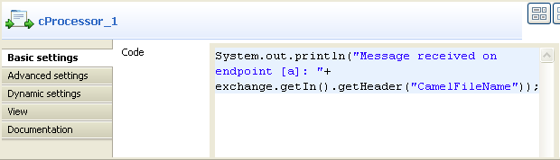
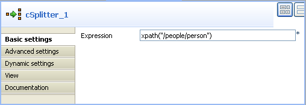
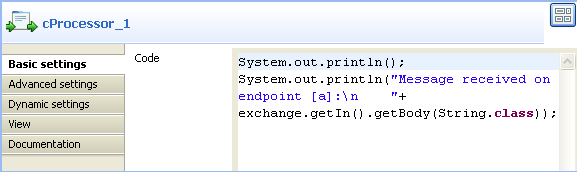

Component Family | Routing | |
Function | cRoutingSlip allows you to route a message or messages consecutively through a series of processing steps, with the sequence of steps unknown at design time and variable for each message. | |
Purpose | cRoutingSlip is used to route a message or messages consecutively to a series of endpoints. | |
Basic settings | Header name | Type in name of the message header as defined in the preceding cSetHeader component, mySlip by default. The header should carry a list of endpoint URIs you wish each message to be routed to. |
| URI delimiter | Delimiter used to separate multiple endpoint URIs carried in the message header, comma (,) by default. | |
Usage | cRoutingSlip is used as a middle or end component of a sub-route. It always follows a cSetHeader component, which sets a header to each message to carry a list of endpoint URIs. | |
Limitation | n/a | |
In this scenario, a file message is routed consecutively to a series of endpoints according to the URIs carried in the message header.
The following is an extract of the example XML file used in this use case:
This use case requires a cRoutingSlip component, a cSetHeader component, four cMessagingEndpoint components, and three cProcessor components.

From the Palette, expand the Messaging folder, drop four cMessagingEndpoint components onto the design workspace, and label them for clearer endpoint identification, as shown above.
From the Transformation folder, drop a cSetHeader component onto the design workspace.
From the Routing folder, drop a cRoutingSlip component onto the design workspace.
From the Processor folder, drop three cProcessor components onto the design workspace.
Right-click the cMessagingEndpoint component labelled Source, select Row > Route from the contextual menu and click the cSetHeader component.
Right-click the cSetHeader component, select Row > Route from the contextual menu and click the cRoutingSlip component.
Repeat this operation to connect the cMessagingEndpoint component labelled Endpoint_a to the first cProcessor component, Endpoint_b to the second cProcessor component, and Endpoint_c to the third cProcessor component, to monitor the messages received on these endpoints.
Double-click the input cMessagingEndpoint component labelled Source to display its Component view, and type in the URI of the source message in the URI field.
As we are handling a file message, type in "file:/" followed by the path to the folder containing the file to send, with the noop file specific option. This option tells Camel to leave the file as is, instead of moving it from its original folder.

Double-click the cSetHeader component to display its Component view.
In the Header field, type in the name of the header you want to add to each message.
In this use case, we simply use mySlip, which is the default value filled in the Header name field of the cRoutingSlip component.
From the Language list box, select the Constant or Simple, and in the Expression field, type in the URIs you wish the message to be routed consecutively to, separated by a delimiter.
In this use case, we want the message to be routed first to endpoint c, then to endpoint a, and finally to endpoint b.

Double-click the cRoutingSlip component to display its Component view, and define the message header in the Header name field and the URI delimiter in the URI delimiter field.
In this use case, we simply use the default settings.

Double-click the cMessagingEndpoint component labelled Endpoint_a to display its Component view, and type in the URI in the URI field for the destination of your message.
Here, we want to use this component to retrieve the message routed to the URI direct:a.

Repeat this step to set the endpoint URIs for the rest two cMessagingEndpoint components: direct:b and direct:c respectively.
Double-click the first cProcessor component to display its Component view, and customize the code so that the console will display information the way you wish.
Here, we want to use this component to monitor the message routed to the connected endpoint a and display the file name, so we customize the code accordingly, as shown below.
Repeat this step to customize the code for the other two cProcessor components, for messages routed to the connected endpoints b and c respectively.
Press Ctrl+S to save your Route.
Click the Code tab at the bottom of the design workspace to have a look at the generated code.

In this partially shown code, the message is given a header according to
.setHeader, which carries a list of URIs ("direct:c,direct:a,direct:b"), and then routed in the slip pattern according to.routingSlip.Click the Run view to display it and click the Run button to launch the execution of your Route.
You can also press F6 to execute it.

RESULT: The source file message is routed consecutively to the defined endpoints: c, then a, and then b.
In this scenario, a file message containing people information is split into several messages, each then routed consecutively to different endpoints according to the city name it contains.
The following is an extract of the example XML file used in this use case:
<people>
<person>
<firstName>Pierre</firstName>
<lastName>Dubois</lastName>
<city>Paris</city>
</person>
<person>
<firstName>Nicolas</firstName>
<lastName>Yang</lastName>
<city>Beijing</city>
</person>
<person>
<firstName>Ellen</firstName>
<lastName>Ripley</lastName>
<city>Washington</city>
</person>
</people>A predefined Java Bean, setEndpoints, is called in this use case to return endpoint URIs according to the city name contained in each message, so that the messages will be routed as follows:
The message containing the city name Paris will be routed first to endpoint a, then to endpoint b, and finally to endpoint c.
The message containing the city name Beijing will be routed first to endpoint c, then to endpoint a, and finally to endpoint b.
Any other messages will be routed to endpoint b and then endpoint c.
For more information about creating and using Java Beans, see ???.
package beans;
import org.w3c.dom.Document;
import org.w3c.dom.Element;
import org.w3c.dom.NodeList;
public class setEndpoints {
public String helloExample(Document document) {
NodeList cities = document.getDocumentElement().getElementsByTagName(
"city");
Element city = (Element) cities.item(0);
String textContent = city.getTextContent();
if ("Paris".equals(textContent)) {
return "direct:a,direct:b,direct:c";
} else if ("Beijing".equals(textContent)) {
return "direct:c,direct:a,direct:b";
} else
return "direct:b,direct:c";
}
}In this use case we will add one more component, cSplitter, to the Route set up in the previous scenario to split the source file message into sub-messages.
From the Palette, expand the Routing folder, and drop a cSplitter component onto the design workspace, between the cMessagingEndpoint component labelled Source and the cSetHeader component.
Right-click the cMessagingEndpoint component labelled Source, select Row > Route from the contextual menu and click the cSplitter component.
Right-click the cSplitter component, select Row > Split from the contextual menu and click the cSetHeader component.
Link the rest components as you did in the previous scenario.
In this scenario, we simply keep the settings for the cMessagingEndpoint components and the cRoutingSlip component unchanged. We just need to configure the cSplitter component to split the source message, the cSetHeader component to call the predefined Java Bean, and the cProcessor components to customize the console display.
Double-click the cSplitter component to display its Component view, and set an Xpath expression in the Expression field to split the message into several messages at each person node of the XML file.
Double-click the cSetHeader component to display its Component view.
In the Header field, type in the name of the header you want to add to each message.
In this use case, we simply use mySlip, which is the default value filled in the Header name field of the cRoutingSlip component.
Select the Use bean check box, and in the Bean class field that appears, type in the name of the predefined Java Bean.

Thus, the endpoint URIs returned by the Java Bean will be carried in the message header.
Double-click the first cProcessor component to display its Component view, and customize the code so that the console will display information the way you wish.
Here, we want to use this component to monitor any message routed to the connected endpoint a and display the message content, so we customize the code accordingly, as shown below.
Repeat this step to customize the code for the other two cProcessor components, to display the information of messages routed to the connected endpoints b and c respectively.
Press Ctrl+S to save your Route.
Click the Code tab at the bottom of the design workspace to have a look at the generated code.

In this partially shown code, the message is split according to the condition
.split, then each sub-message is given a header according to.setHeader, which carries the list of URIs returned by.method(beans.setEndpoints.class), and then routed in the slip pattern according to.routingSlip.Click the Run view to display it and click the Run button to launch the execution of your Route.
You can also press F6 to execute it.

RESULT: The source file message is split and then each sub-message is routed consecutively to the defined endpoints: the message containing the city name Paris is routed first to endpoint a, then to endpoint b, and finally to endpoint c; the message containing the city name Beijing is routed first to endpoint c, then to endpoint a, and finally to endpoint b; all other messages are routed to endpoint b and then to endpoint c.